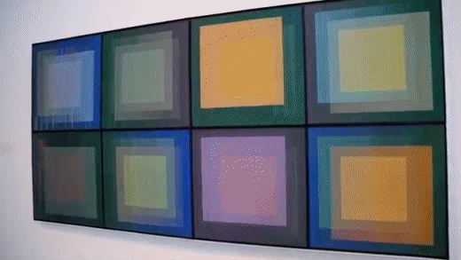

Los estables:
Son obras fijas, y es el espectador quien tiene que rodearlas para percibir el movimiento


El término de arte cinético deriva de la palabra griega “kinesis”, que significa movimiento.
Es una corriente de arte en que las obras tienen movimiento o parecen tenerlo, por lo que suelen interactuar con elementos «exteriores» , que se puede clasificar en tres tipos:
Son obras fijas, y es el espectador quien tiene que rodearlas para percibir el movimiento
Las obras producen un movimiento real, y por tanto van cambiando su estructura constantemente. Las partes generalmente son impulsadas por el viento, por un motor o por el observador.
Las obras son ensamblajes en espacios reales y el espectador debe recorrerlas, penetrar en ellas.